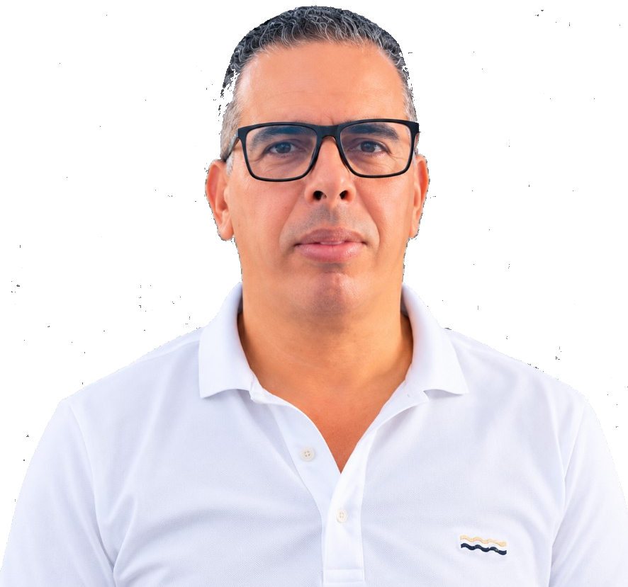
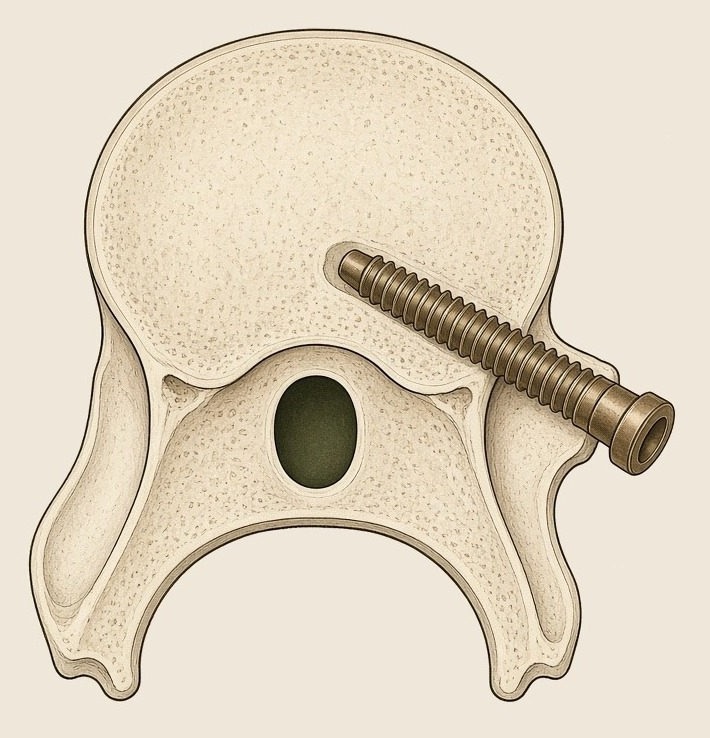
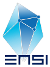
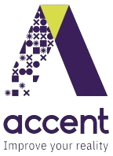

Le patient.
Une vis hors du pédicule peut toucher une racine, la moelle, ou imposer une reprise. L’assistance rend la trajectoire lisible avant que la vis n’avance. Le chirurgien reste celui qui décide.
Demande d’hébergement
2027 — 2029Surgi Tech Solutions
Une assistance au chirurgien, pour le guidage des vis pédiculaires.

Promoteur
Docteur Bouzid Lanouar
Chirurgien orthopédiste
Institut Mohamed Kassab · Ksar Saïd
À l’attention de S2T Pôle technologique de la Manouba
Ce que nous venons chercher
Une place au pôle, pour l’équipe qui poursuit le logiciel d’aide au guidage des vis pédiculaires. De 2027 à 2029.
Les salaires, les essais et la propriété intellectuelle sont déjà dans notre plan. Au pôle, nous venons chercher le cadre de ce travail : un bureau, un voisinage, et une durée.
Le geste, vu du bloc
Le chirurgien opère. L’assistance rend la trajectoire lisible avant que la vis n’avance.

Ce que le projet est
Le robot assiste. Il n’opère pas.
Le robot ne fait pas la chirurgie. Il aide à préparer la trajectoire et à la tenir. Le docteur décide, confirme, et pose la vis.
Le projet est réalisable, et il est déjà entamé. La vertèbre est détectée, l’axe de perçage est estimé, le bras est caractérisé. En 2027, ces pièces doivent tenir ensemble. Le chirurgien reste celui qui confirme et qui pose la vis.
Dans le bloc opératoire
Le chiffre d’affaires commence dès la première année, en 2027.
Sur la fluoroscopie déjà au bloc, la vertèbre est montrée et l’axe de perçage est tracé. Le chirurgien le lit avant d’avancer la vis.
Le patient sur la table est ramené aux axes de l’image. L’axe affiché est celui du corps, dans le champ de travail.
Le bras du partenaire tient l’axe déjà calculé. Le chirurgien confirme, puis pose la vis.
L’équipe du bloc apprend à lire l’axe, puis à travailler avec le bras. Les mises à jour suivent, d’une opération à l’autre.
Dès 2027, 170 000 dinars : planification et formation. En 2028, le repère porte le total à 340 000. En 2029, l’assistance complète ouvre les 800 000. Les totaux du plan ne changent pas.
L’impact social
Une vis hors du pédicule peut toucher une racine, la moelle, ou imposer une reprise. L’assistance rend la trajectoire lisible avant que la vis n’avance. Le chirurgien reste celui qui décide.
Les essais se font à l’Institut Kassab. Le projet vise une solution compacte et accessible, à la portée de cet hôpital.
Les pilotes commencent dans les hôpitaux tunisiens, puis en Afrique du Nord et en Afrique subsaharienne. La formation garde le geste chez le chirurgien du lieu.
La littérature dit qu’environ une vis sur cinq manque le couloir. Le chiffre de ce projet se mesurera aux essais.
Ce que la société développe
Le bras vient d’un partenaire industriel. Il porte l’alignement préparé par le logiciel. L’opération reste entre les mains du chirurgien.
Pourquoi ce pôle
Le docteur Bouzid Lanouar y a passé une belle période de sa carrière. L’hôpital soutient les tests.
Le laboratoire CRISTAL travaille l’image avec nous.
Le soutien technique porte sur la partie embarquée.
Depuis plusieurs années
Le jalon image et bras est déjà là. 2027 sert à les faire tenir ensemble, ici.


Le pipeline
Déjà obtenu
La suite
À quoi servira le bureau
Près de la moitié des charges de 2027 rémunère déjà l’équipe. C’est elle qui a besoin d’une adresse.
La suite, en trois preuves
2027
2028
2029
La précision de l’axe tenu par le bras, sur des images de bloc, est le sujet de 2027 et 2028.
Le plan, dit tel quel
| 2027 | 2028 | 2029 | |
|---|---|---|---|
| Charges | 250 000 | 445 000 | 620 000 |
| Chiffre d’affaires | 170 000 | 340 000 | 800 000 |
| Résultat | −80 000 | −105 000 | +180 000 |
Prévisionnel, en dinars tunisiens. Les totaux sont ceux du plan.
Le chiffre d’affaires est là dès la première année : 170 000 en 2027, par la planification et la formation. Aucun robot n’est vendu. En 2028, le repère s’ajoute, 340 000. En 2029, le produit principal entre dans l’offre : le logiciel et le bras, 800 000.
Si le cap de 2029 se prolonge
2027, 2028 et 2029 restent les chiffres du plan. Pour 2030 et 2031, le chiffre d’affaires gagne la moitié par an et les charges un quart : un pas plus mesuré que le bond déjà écrit entre 2028 et 2029.
| 2027plan | 2028plan | 2029plan | 2030possible | 2031possible | |
|---|---|---|---|---|---|
| Charges | 250 000 | 445 000 | 620 000 | 775 000 | 969 000 |
| Chiffre d’affaires | 170 000 | 340 000 | 800 000 | 1 200 000 | 1 800 000 |
| Résultat | −80 000 | −105 000 | +180 000 | +425 000 | +831 000 |
2030 et 2031 prolongent le plan, à titre de lecture. Les charges de 2031 sont arrondies au millier. Cumulé depuis 2027, le résultat atteint 1,25 million. L’année 2031 seule vaut plus de quatre fois les +180 000 du plan.
Les emplois, avec le chiffre d’affaires
| 2027plan | 2028plan | 2029plan | 2030possible | 2031possible | |
|---|---|---|---|---|---|
| Emplois | 4 | 7 | 10 | 12 | 15 |
| Chiffre d’affaires | 170 000 | 340 000 | 800 000 | 1 200 000 | 1 800 000 |
Le poste Personnel du plan est 120 000, puis 200 000, puis 290 000. À 30 000 dinars de coût complet par personne, arrondi à l’unité, cela fait quatre, sept et dix postes. 2030 et 2031 prolongent ce poste d’un quart par an, comme les charges. Le chiffre d’affaires en face est celui déjà montré.
Ce que le pôle reçoit
En retour, le développement se fait sur le site, les recrutements aussi. Chaque fin d’année, nous revenons avec ce qui a été démontré.
Ce que nous soumettons au comité
S2THéberge l’équipe logicielle et l’accompagne.
KassabLe chirurgien y opère. La clinique reste la sienne.
L’industrielFournit le bras d’assistance, sur notre cahier des charges.
La Manouba
Nous voudrions que le logiciel s’écrive ici, avec vous.
Société Al Khawarizmi Surgi Tech Solutions Docteur Bouzid Lanouar Institut Mohamed Kassab · Ksar Saïd
Merci.
Flèches pour avancer · F pour le plein écran